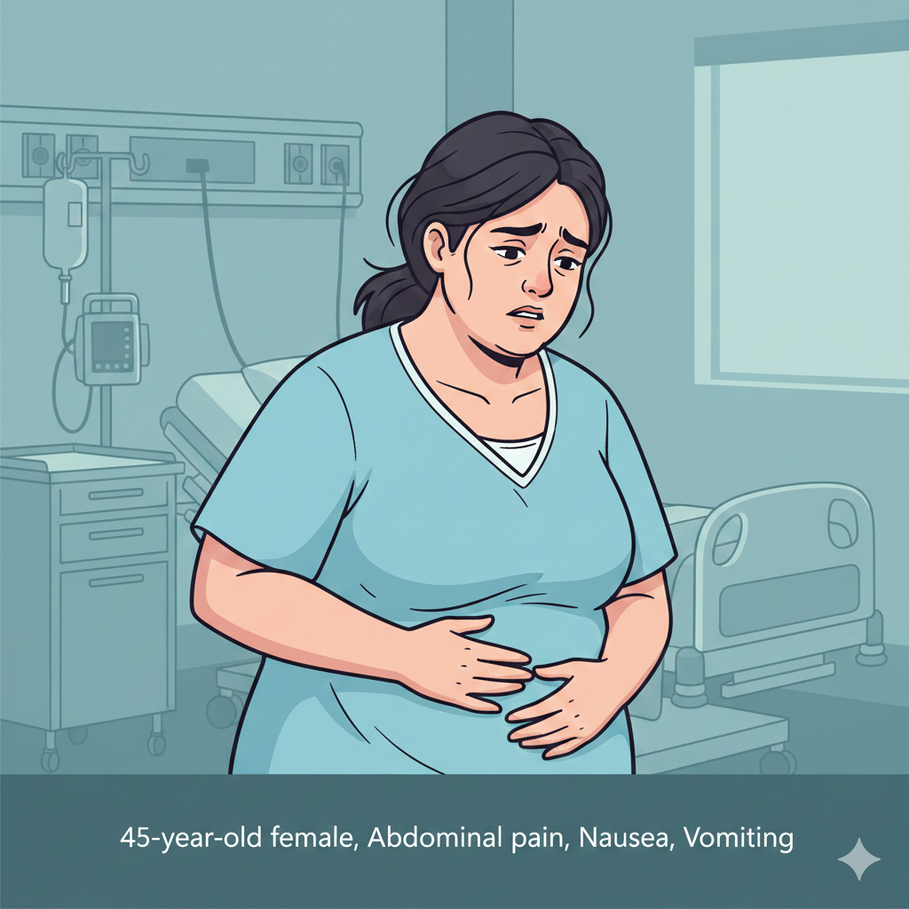

Part 1 – Initial Presentation

History
- Pain started in upper abdomen, now more diffuse
- Intermittent chills, no documented fever
- PSHx: Cesarean section 12 years ago
- PMHx: Obesity, hyperlipidemia
- Meds: None
- Denies tobacco, alcohol, or drug use
Vitals
- T 37.9°C
- HR 104
- BP 132/84
- RR 18
- SpO₂ 99% RA
Exam
- Awake, alert, no distress
- Slight scleral icterus
- Mucus membranes dry
- Clear breath sounds
- Generalized abdominal pain, worst in RUQ/epigastrium
Question 1: Initial diagnostic approach?